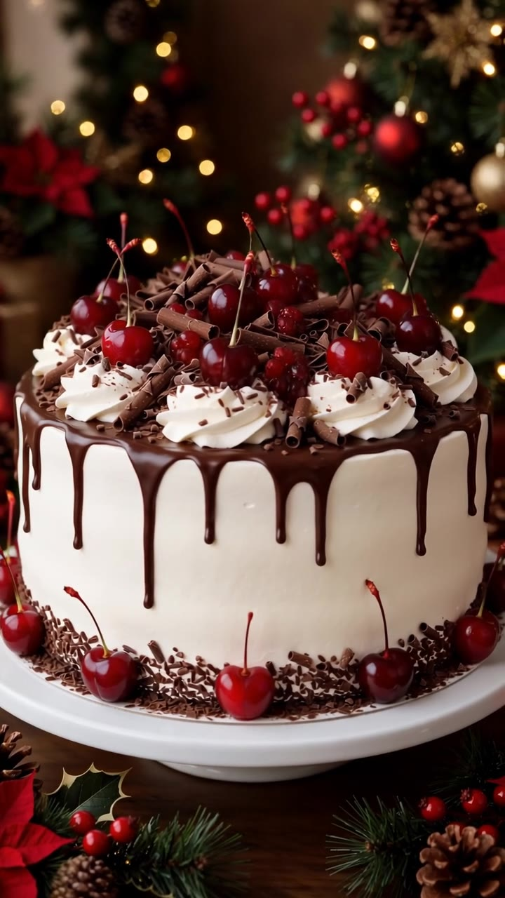

Bolo floresta negra molhadinho e fofinho
Bolo floresta negra de Natal: massa de chocolate molhadinha, recheio de chantilly com cerejas e creme de chocolate, cobertura com drip de chocolate e muitas cerejas.

16 fatias · forma redonda de 22 a 24 cm · toque para marcar o que já separou
O floresta negra é o bolo de Natal mais lindo da mesa: massa de chocolate fofinha e bem molhadinha, um recheio de chantilly com cerejas e outro de creme de chocolate cremoso, também com cerejas. Por fora, chantilly, um drip fininho de chocolate, raspas e muitas cerejas. A dica para dar certo é se organizar: o creme de chocolate é feito antes e precisa de geladeira para firmar.
Modo de preparo- Creme de chocolate (faça antes): dissolva o amido em um pouco do leite frio. Junte o cacau e mexa até ficar sem gruminhos. Acrescente o restante do leite, o leite condensado e o sal.
- Cozinhe em fogo médio, mexendo sempre, até engrossar e borbulhar. Abaixe o fogo e cozinhe por mais 2 minutos.
- Desligue, junte o chocolate picado até derreter e misture o creme de leite. Cubra com plástico-filme em contato e leve à geladeira por 4 horas.
- Massa: bata os ovos com o açúcar até ficar claro. Junte o leite morno e o óleo, depois o chocolate em pó e a farinha, e por último o fermento.
- Asse a 180 °C por cerca de 40 minutos (teste do palito). Deixe esfriar.
- Calda: misture o leite, o chocolate em pó e o açúcar.
- Corte a massa em 3 camadas e molhe bem com a calda. Monte com uma camada de chantilly com cerejas e outra de creme de chocolate com cerejas (mexa o creme e misture as cerejas na hora de rechear).
- Cubra com chantilly, faça um drip fininho de chocolate, coloque raspas só em cima, muitas cerejas e, no rodapé, uma camadinha de raspas com cerejas. Leve à geladeira por 3 horas.


Boleira de vidro com borda de bolinhas
A boleira com pé que deixa bolos e docinhos com cara de confeitaria. Linda para festas, mesa de Natal e fotos de receitas.
Loja dos Estados Unidos: preço em dólar e entrega conforme as regras da Amazon.
Link de afiliado. Como Associada Amazon, ganho com compras qualificadas.
Publicada em 20 de novembro de 2026 · Tempo total: 1 h 30 min · Imagem ilustrativa criada com IA.
Conta pra gente como ficou! Deixe um comentário, mande uma foto do seu resultado ou marque @melhores.receitas126 no seu post.